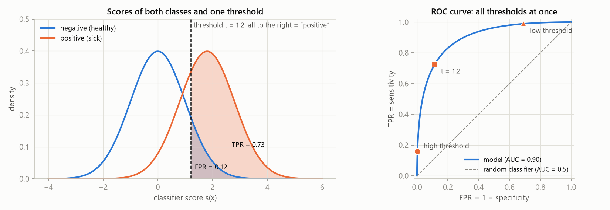
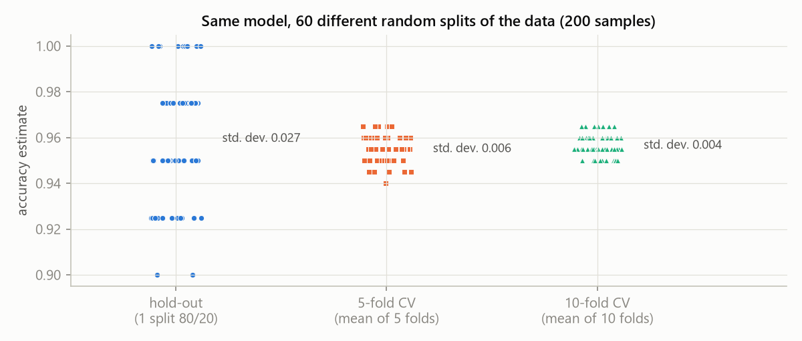

MLR – exam notes · Model evaluation and preprocessing – MLR · https://balnerm.github.io/pripravy/mlr/en/02_hodnoceni.html
Lecture 2
Model evaluation, metrics and preprocessing
Almost any model that is complex enough can push the training error close to zero. What we care about, though, is the number the model reaches on data it has never seen. This chapter shows how to split the data, how to measure performance (and what each metric hides), how to handle imbalanced classes and how to preprocess the data so that no information from the test set leaks into the evaluation.
From data to a tested model
- Define the goal – what do we want to predict?
- Split the data – training / validation / test.
- Preprocess – clean and prepare the features.
- Train and tune – fit the models, adjust the settings.
- Evaluate – performance on the validation data.
- Final test – use the test data once for a realistic estimate.
The training set is used to learn the model parameters. The validation set is used to tune hyperparameters, select features, compare models and watch for overfitting. The test set is kept aside until the end and used once – it gives an unbiased estimate of the performance on new data.
the training data are the textbook, the validation data a practice test on which you try different ways of learning, and the test data are the real exam that you must not see beforehand. Whoever tunes on the test “cheats” and gets an overly optimistic number.
The population (expected) risk is the expected loss of the model on future samples from the true (unknown) distribution \(P\): \[ R(\theta) = \mathbb E_{(\mathbf x, y)\sim P}[L(f_\theta(\mathbf x), y)] \] The empirical risk is the average loss on a finite sample of data, e.g. on the training set: \[ \hat R_{\text{train}}(\theta) = \frac{1}{n}\sum_{i} L(f_\theta(\mathbf x_i), y_i) \]
we train by minimizing the empirical risk on the training data, but we care about the population risk. We estimate it by the average loss on a held-out test set: \(\hat R_{\text{test}} \approx R(\theta)\). The whole model development is an optimization of generalization.
Inner problem – training (SGD, backpropagation…): the parameters \(\theta\) are fitted to the training set, \(\theta^\ast = \arg\min_\theta \hat R_{\text{train}}(\theta)\). Outer problem – model development: the whole pipeline \(P\) (features, preprocessing, model, hyperparameters) is evaluated on the validation set, \(P^\ast = \arg\min_{P\in\mathcal H}\hat R_{\text{val}}(P)\). Test \(\hat R_{\text{test}}(P^\ast)\) – once, at the very end. Procedure: train → validate → tune → repeat; after choosing the final model, test once.
The loss function is the number the optimizer minimizes in every step during training; it must be differentiable and is computed per sample (cross-entropy, MSE, hinge). A metric is the number we use to judge the result on validation/test data and that expresses what matters in the task (accuracy, F1, AUC, Dice, MAE).
accuracy is a step function of the model output (its gradient is zero almost everywhere), and F1 or AUC are computed from the whole set, not per sample – that is why we train on a smooth substitute and report the metric. Sometimes they are the same (MSE in regression). Without a loss function the computer would not know which model is better.
Metrics
For every metric ask: what does it measure – and what does it hide?
Accuracy and regression errors
| \(e_i = \hat y_i - y_i\) | error (residual) of the \(i\)-th prediction |
| MSE | mean of squared errors = \(\frac1n\|\mathbf e\|_2^2\); punishes large errors much more |
| MAE | mean of absolute errors = \(\frac1n\|\mathbf e\|_1\); more robust to outliers |
| RMSE | square root of MSE – has the same units as \(y\) |
| \(p\) in \(\frac1n\|\mathbf e\|_p^p\) | in general: \(p\) sets how expensive a large error is |
Error rate = 1 − accuracy.
Classification: \(\mathbf y = [1, 0, 1, 2, 0]\), \(\hat{\mathbf y} = [1, 1, 1, 0, 0]\) ⇒ accuracy = 3/5 = 0.6.
Regression – true and predicted values and errors \(e_i = \hat y_i - y_i\):
\[ \begin{aligned} \mathbf y &= [3,\ -0.5,\ 2,\ 7,\ 4.2] \\ \hat{\mathbf y} &= [2.5,\ 0,\ 2.1,\ 7.8,\ 3.5] \\ \mathbf e &= [-0.5,\ 0.5,\ 0.1,\ 0.8,\ -0.7] \end{aligned} \]Metrics:
\[ \begin{aligned} \text{MSE} &= 1.64/5 = 0.328 \\ \text{MAE} &= 2.6/5 = 0.52 \\ \text{RMSE} &= \sqrt{0.328} = 0.573 \\ R^2 &= 1 - 1.64/30.59 = 0.946 \end{aligned} \]Confusion matrix and the metrics from it
The confusion matrix is a table of counts that, for binary classification, cross-tabulates the true and the predicted class: TP (truly positive, predicted positive), FN (positive, predicted negative – type II error), FP (negative, predicted positive – type I error) and TN (negative, predicted negative).
an overview of exactly where the model makes mistakes. All common classification metrics are ratios of numbers from this table.
| predicted positive | predicted negative | row metric | |
|---|---|---|---|
| truly positive | TP | FN (type II error) | sensitivity = recall = TPR = TP/(TP+FN) |
| truly negative | FP (type I error) | TN | specificity = TN/(TN+FP) |
| column metric | precision (PPV) = TP/(TP+FP) | NPV = TN/(TN+FN) | accuracy = (TP+TN)/all |
Sensitivity (recall, TPR) is the share of truly positive samples that the model marked as positive: TP/(TP+FN). Precision (PPV) is the share of samples marked as positive that really are positive: TP/(TP+FP). Specificity is the share of truly negative samples marked as negative: TN/(TN+FP).
recall: “how many of the sick did I find?”; precision: “when I say sick, how often am I right?”; specificity: “how many healthy people did I leave alone?” None of them is enough alone – a model that says “positive” to everyone has sensitivity 1.
The F1 score is the harmonic mean of precision and sensitivity: \[ F_1 = 2\cdot\frac{\text{precision}\cdot\text{recall}}{\text{precision} + \text{recall}} = \frac{2TP}{2TP + FP + FN} \] It is identical to the Dice coefficient \(2|X\cap Y|/(|X| + |Y|)\) of the sets of predicted and true positives.
one number that is high only when the model both misses little and raises few false alarms. It does not depend on TN, so it is useful when there are few positive samples.
10 samples: TP = 4, FP = 2, FN = 1, TN = 3 ⇒ precision 4/6 = 0.67; recall 4/5 = 0.80; \(F_1 = 8/11 = 0.73\) (accuracy 0.7). Model “always positive” (TP = 5, FP = 5): recall 1.0, but \(F_1 = 10/15 = 0.67\).
ROC curve, AUC and choosing the threshold
Most classifiers return a score (a measure of confidence) and only a threshold decides the class. What the score is: for logistic regression and networks the output of the sigmoid/softmax, for a random forest the share of trees voting for the class, for k-NN the share of the \(k\) neighbours, for SVM the signed distance from the hyperplane, for naive Bayes the posterior probability. Sometimes the threshold is part of the model (SVM).
The ROC curve (receiver operating characteristic) is the curve of points \((\text{FPR}, \text{TPR})\) that we get when we move the decision threshold step by step over all score values: \[ \text{TPR} = \frac{TP}{TP+FN} \] \[ \text{FPR} = \frac{FP}{FP+TN} = 1 - \text{specificity} \]
the whole classifier in one picture: every threshold is one point, choosing a threshold only picks a point on the curve. High threshold ⇒ almost nothing is positive, point (0, 0); low threshold ⇒ everything positive, (1, 1). A perfect classifier touches (0, 1), a random one lies on the diagonal.
- Compute the score \(s_i\) of all samples.
- Sort the unique score values and use them as thresholds.
- For each threshold binarize the predictions and compute TPR and FPR.
- Plot the points (FPR, TPR) and connect them.
ROC AUC is the area under the ROC curve, \(\text{AUC} = \int_0^1 \text{TPR}\,d(\text{FPR})\). It equals the probability that a randomly chosen positive sample gets a higher score than a randomly chosen negative one: \(\text{AUC} = P(s(\mathbf x^+) \gt s(\mathbf x^-))\).
how well the model ranks positives above negatives, independent of the threshold. 0.5 = chance, 1 = perfect ranking. But AUC says nothing about whether the scores are good probabilities (calibration).

Moving the threshold to the right lowers FPR (fewer false alarms) and TPR (more missed cases) – it is always a trade-off. The whole curve is one classifier; the shape of the curve (and AUC) depends on how much the score distributions of the two classes overlap. Better model = less overlap = curve closer to the top-left corner.
The default threshold 0.5 on the probability is a habit, not a rule.
- Maximum accuracy (FP and FN equally expensive): \(t = 2.54\), accuracy 0.956 – but it finds only 23 % of the positives.
- Youden index \(J = \text{TPR} - \text{FPR}\) (the point farthest from the diagonal): \(t = 0.90\), sensitivity = specificity = 0.82.
- Required sensitivity (screening: miss at most 5 %): \(t = 0.16\), paid for by FPR = 0.44.
The threshold is chosen on validation data, never on the test set.
| parameter | what it means | ↑ when I increase it | ↓ when I decrease it |
|---|---|---|---|
| threshold \(t\) | from what score I say “positive” | fewer positive predictions: FPR ↓, specificity ↑, precision usually ↑, but recall (TPR) ↓ – more missed cases | more positive predictions: recall ↑, but FPR ↑ and precision ↓ – more false alarms |
by the costs of errors: screening → high sensitivity; confirmatory test → high specificity; no preference → Youden index. The threshold does not affect ROC or AUC – it only changes the point on the curve.
A classifier is calibrated if its output can be read as a probability: among samples with \(\hat p = 0.8\) about 80 % are positive (checked by bins in a reliability diagram). The Brier score \(\frac1n\sum_i(\hat p_i - y_i)^2\) is the MSE of the probabilities and does capture calibration.
a monotonic transformation of the score keeps the ranking, ROC and AUC – and at the same time it can destroy the probabilities. AUC does not see calibration; Brier does (in the lecture 0.133 vs. 0.153 for the same AUC).
The coefficient of determination says how much better the model is than predicting the mean: \[ R^2 = 1 - \frac{\sum_i(y_i - \hat y_i)^2}{\sum_i(y_i - \bar y)^2} = 1 - \frac{\text{SSE}}{\text{SST}} \] \[ R^2 \in (-\infty, 1] \]
1 = perfect fit, 0 = the model is no better than “always the mean”, negative = it is even worse. The numerator is the sum of squared residuals (SSE), the denominator the total sum of squares (SST).
More classes and more labels
Multiclass (one label): each sample belongs to exactly one of \(K\) classes, \(y \in \{1,\dots,K\}\) or a one-hot vector summing to 1 (tumour type on MRI, grade of diabetic retinopathy). Multilabel: a sample can have no label, one or several labels at once, \(\mathbf y \in \{0,1\}^K\) (multi-hot; image tags, a patient’s comorbidities).
multiclass = “pick one answer”, multilabel = “tick all that apply”.
Micro: first TP, FP, FN are summed over all classes and one global value is computed from them (for single-label multiclass micro-F1 = accuracy). Macro: the metric is computed for each class separately and the results are simply averaged. Weighted macro: like macro, but the average is weighted by the number of samples of each class (support).
micro = “how well it does on individual samples” (frequent classes dominate); macro = “every class has the same vote” (highlights poor performance on rare classes, noisy for small classes); weighted = a compromise, a sensible default with imbalance.
Class A has 90 samples, B 8, C 2. Confusion matrix (rows = truth, columns = prediction A, B, C): A [85, 3, 2], B [2, 5, 1], C [1, 0, 1]. F1 per class: A 0.955; B 0.625; C 0.333.
- micro-F1 = accuracy = 91/100 = 0.91;
- weighted-F1 = 0.916 (dominated by A);
- macro-F1 = (0.955 + 0.625 + 0.333)/3 = 0.638 – the only number that shows the model barely works on C.
The model “always A” has accuracy 0.90 but macro-F1 only 0.316.
For multilabel: subset accuracy (exact match – all labels must be right), Hamming loss (share of wrong labels, lower is better) and micro/macro F1 over labels.
Imbalanced classes
The data have imbalanced classes when one class is much rarer than the others (e.g. fewer than 5 % positives). Accuracy paradox: a model that completely ignores the minority class still has high accuracy.
when 1 % are positive, a model that never finds anything has 99 % accuracy – and is useless.
- Evaluate correctly: macro/weighted F1, normalized confusion matrix, report the prevalence.
- Train with the imbalance in mind: class weights / cost-sensitive loss, or resampling.
| oversampling (make the minority larger) | undersampling (make the majority smaller) | |
|---|---|---|
| methods | random duplication; SMOTE, ADASYN – synthetic points between minority neighbours; augmentation (rotation, noise – “SMOTE for images and signals”) | random removal; cleaning rules Tomek links, ENN, NearMiss, ClusterCentroids |
| pros | keeps all majority data, increases recall | faster, can remove noise at the boundary |
| cons | overfitting (duplicates), artefacts (synthetic points) | throws away information, risk of underfitting |
| when | very small minority | huge majority, expensive training |
Any resampling only on the training data, inside each CV fold – never on validation or test data (otherwise you evaluate on artificial points). The same holds for preprocessing (scaling, PCA): fit only on the training data, the values from it are applied to validation/test.
A stratified split keeps the class proportions the same in the training, validation and test sets and in every fold. A group-aware split puts all data of one group (patient, device, site) into the same part.
when we have several signals from one patient, all of them must be either in training or in the test. Otherwise the model “learns the patient”, signals of the same patient are strongly correlated and the result is overly optimistic (data leakage).
Validation approaches
k-fold cross-validation splits the data into \(k\) roughly equal parts (folds) and runs \(k\) rounds: in each, the model is trained on \(k-1\) folds and validated on the remaining one. The result is the mean ± standard deviation of the metric over the folds. For \(k = n\) it is leave-one-out (LOO).
every sample becomes a validation sample once and a training sample \(k-1\) times, so we use all the data and also get an idea of the spread of the estimate. The test set stays untouched; scaling and resampling are done inside each fold. With small data, CV can also be used instead of a test set.
Blue: training folds, orange: the validation fold of that round.
Hold-out validation splits the data once into a training, validation and test part (e.g. 70/15/15 or 60/20/20): training happens on the training part, hyperparameters and thresholds are tuned on the validation part and the final performance is measured once on the test part.
simple and fast (one fit per setting), good for large data and makes it easy to keep the test clean. Downside: the estimate has high variance – it depends on how “lucky” the split was – and with small data it wastes samples that would help training.

One split gives one number – and that number depends a lot on luck (hold-out varies between 0.90 and 1.00, sd 0.027). The mean over CV folds is much more stable (sd 0.006 and 0.004). The question “how much of the number is the model and how much is the luck of the split” is exactly the reason for cross-validation.
| parameter | what it means | ↑ when I increase it | ↓ when I decrease it |
|---|---|---|---|
| number of folds \(k\) | into how many parts I split the data | more fits (computation ↑), each fit has more training data (\(n(k-1)/k\)) ⇒ less pessimistic estimate; \(k = n\) is LOO | less computation, but less training data per fit (more pessimistic estimate) and fewer folds to average |
| size of the test / validation part | how much data I keep aside | more exact performance estimate, but less data for training | more data for training, but a noisy estimate |
| stratification / groups | keep class proportions, do not split groups | always switch on when the classes are imbalanced or the data have groups (patients); otherwise the estimate can be biased or overly optimistic | |
typically \(k = 5\) or 10; hold-out 70/15/15 for large data.
Preprocessing without data leakage
Data leakage happens when the training of a model (including preprocessing, feature selection or tuning) gets information from the data on which the model is supposed to be evaluated, or information the model would not have in real use.
the model “copies from the answer key” and looks better on the test than it really is. Typical cases: the mean for standardization computed from all data, resampling before splitting, signals of one patient in both training and test, feature selection on the whole dataset. The model only sees preprocessed data – and that is exactly where most leaks happen.
Typical steps: cleaning (missing values, outliers, inconsistent categories), scaling, encoding categories, dimensionality reduction. Implement everything inside a Pipeline and evaluate with cross-validation – then the preprocessing fit happens automatically only on the training folds.
Scaling
- standardization: \[ x' = \frac{x - \mu_{\text{train}}}{\sigma_{\text{train}}} \]
- robust scaling: \[ x' = \frac{x - \text{med}_{\text{train}}}{\text{IQR}_{\text{train}}} \]
- min–max: \[ x' = \frac{x - \min_{\text{train}}}{\max_{\text{train}} - \min_{\text{train}}} \]
- percentile min–max: \[ x' = \operatorname{clip}\!\left(\frac{x - P_{1}}{P_{99} - P_{1}},\ 0,\ 1\right) \]
| standardization (z-score) | mean 0, sd 1, keeps the shape of the distribution; the default for linear models, SVM, PCA, networks |
| robust | median and interquartile range instead of \(\mu, \sigma\) – outliers do not shift the scale |
| min–max | exactly [0, 1]; for bounded inputs (images, sigmoids); one outlier “squeezes” everything else |
| percentile min–max | bounded and robust: extremes are clipped to the 1st and 99th percentile |
Trees usually do not need scaling; linear models, SVM, k-NN and logistic regression do.
Missing values (imputation)
Imputation is replacing a missing value with an estimate – a column statistic (mean, median, most frequent value) or a value derived from the other features (kNN imputer, iterative MICE).
we patch the hole with the “most sensible guess”. But the guess is made up, not measured: one value for the whole column “flattens” it (in the lecture sd 0.96 → 0.77) and weakens relationships (correlation 0.73 → 0.59). kNN and MICE follow the trend (correlation 0.79), just a bit too smoothly.
- Missingness indicator – a 0/1 column “was missing”: often the most informative feature (not examined = the doctor saw no reason).
- Dropping rows – only when there are few of them and they are missing at random.
- All statistics are computed from the training rows; validation and test rows get the same numbers.
Height (cm) of eight students: 172, –, 165, 180, 400, 168, –, 175. The mean of the six known values is 210.0 – so the value 400 (an obvious error) gets “copied” into two more rows. The median 173.5 ignores it. For test scores (68, 74, –, 91, 55, 62, 80, –) filling in 0 means “did not take the test”, the mean 71.7 “an average student” – neither is neutral; the fact that it was missing is kept by an indicator column.
Outliers
Tukey fences mark a value as an outlier if it lies outside the interval \([Q_1 - 1.5\,\text{IQR},\ Q_3 + 1.5\,\text{IQR}]\), where \(Q_1, Q_3\) are the quartiles and IQR = \(Q_3 - Q_1\). Winsorization clips extreme values to a chosen limit (e.g. a percentile or a fence) – the value stays in the data but loses its excessive influence.
an outlier does not move the quartiles, so the fences are robust. The rule \(|z| \gt 3\), on the other hand, fails because the outlier itself inflates \(\sigma\) (masking).
Heights 172, 165, 180, 400, 168, 175, 161, 177. Mean 199.8, \(\sigma = 75.9\) (without the value 400 it would be \(\sigma = 6.3\)) ⇒ the z-score of 400 is only 2.64, the rule \(|z| \gt 3\) does not catch it. Moreover, with eight values no \(|z|\) can even reach 3: the largest possible z-score is \(\sqrt{n-1} = \sqrt7 \approx 2.65\). Tukey: \(Q_1 = 167.25\), \(Q_3 = 177.75\), IQR = 10.5, upper fence \(Q_3 + 1.5\cdot\text{IQR} = 193.5\) ⇒ 400 is an outlier. If it were plausible, we would winsorize it to 193.5; 400 cm is impossible, so we remove it (inside the training fold).
- The safest default: keep the value and use robust scaling – an outlier need not be an error, it may be that interesting patient.
- In more dimensions: isolation forest, local outlier factor.
- Remove only impossible values, and do it inside the training fold with a rule fitted there.
Encoding categories
One-hot creates one 0/1 column for each level of the category. Ordinal encoding turns the levels into one integer. Target encoding replaces a level by the mean of the target variable \(y\) for that level.
one-hot is the default for nominal categories (for linear models drop one column – the columns sum to 1; merge rare levels into “other”). Ordinal encoding only where an order really exists (low < medium < high) – for a nominal category it invents an order that the model will use. Target encoding handles thousands of levels with one column, but “in-sample” it reveals the label (a level with one row is encoded by its own label) – out-of-fold means on the training data, smoothed towards the overall mean, are needed.
“I evaluate the model on data it has not seen: the training data are for learning the parameters, the validation data for tuning hyperparameters and choosing the model, the test data are used once at the end. With small data I use stratified k-fold cross-validation and report mean ± sd. I choose the metric by the task: with imbalanced classes not accuracy but F1 / macro-F1, ROC AUC for ranking ability and Brier for calibration; I choose the threshold on validation data by the cost of errors. All preprocessing – scaling, imputation, resampling – I fit only on the training folds to avoid data leakage.”
Summary
The goal is not a low training error but a low population risk – we estimate it on held-out data. The training set learns the parameters (inner optimization), the validation set chooses the pipeline and hyperparameters (outer optimization), the test set is used once. The loss function (differentiable, for the optimizer) differs from the metric (for us). Classification metrics come from the confusion matrix: sensitivity, specificity, precision, F1; the ROC curve shows all thresholds, AUC the probability of correct ranking, calibration is measured by the Brier score; the threshold is a choice based on the costs of errors. With more classes we distinguish micro, macro and weighted averages. With imbalanced classes accuracy is misleading; class weights and resampling help – only on the training data. k-fold CV gives a more stable estimate than one split. Preprocessing (robust scaling, imputation with an indicator, Tukey fences, one-hot) is fitted only on the training data, otherwise data leakage occurs.
Take-home messages
- The test is used once; tuning on the test = an overly optimistic result.
- The loss is for the optimizer (smooth), the metric for us (what the task needs).
- Precision = “am I right when I say yes?”, recall = “how many did I find?”, F1 = their harmonic mean.
- ROC = all thresholds; AUC = P(a positive has a higher score); AUC does not see calibration.
- Threshold 0.5 is not a rule – choose it on validation data by the costs of errors.
- Imbalanced classes: macro-F1, stratification, resampling only inside training folds.
- Everything that is “fitted” (scaling, imputation, feature selection) is fitted only on the training data.
Exam questions
What is the difference between empirical and population risk? Which one do we care about?
The population risk is the expected loss on future samples from the true (unknown) data distribution. The empirical risk is the average loss on a finite sample – the training one (we minimize it during learning) or the test one (we use it to estimate the population risk). We care about the population risk, i.e. generalization; the training error is overly optimistic.
What roles do the training, validation and test sets have? Why may the test be used only once?
Training – learning the parameters; validation – tuning hyperparameters, feature selection, comparing models; test – a one-time unbiased estimate of performance. If we made decisions based on the test repeatedly, it would become another validation set and the model would “adapt” to it – the estimate would be overly optimistic.
When is accuracy misleading? Which metrics should be used for a rare positive class?
With imbalanced classes: at 1 % positives a model that finds nothing has accuracy 99 % (accuracy paradox). Better are F1 (harmonic mean of precision and recall, does not depend on TN), the precision–recall pair, macro-F1 for more classes, sensitivity at a given specificity, ROC AUC, a normalized confusion matrix with the prevalence stated.
How is the ROC curve built, how is AUC interpreted and why can a model with high AUC give useless probabilities?
For all thresholds (unique score values) I compute TPR and FPR and plot the points (FPR, TPR). AUC = area under the curve = the probability that a random positive sample has a higher score than a random negative one; 0.5 chance, 1 perfect ranking. AUC depends only on the order of the scores – a monotonic transformation does not change it but can destroy calibration. Calibration is shown by a reliability diagram or the Brier score.
Why is the threshold 0.5 not a rule? How, and on what data, should the operating point be chosen?
0.5 corresponds to equal costs of FP and FN and calibrated probabilities – this often does not hold in practice. Options: maximum accuracy, the Youden index \(J = \text{TPR} - \text{FPR}\), a required sensitivity (screening) or specificity, minimizing the expected cost of errors. The threshold is chosen on validation data (or in CV), never on the test set.
Explain k-fold cross-validation. What happens when we increase k?
I split the data into \(k\) folds; in each of \(k\) rounds I train on \(k-1\) and validate on the remaining one, and I report mean ± sd. Larger \(k\): more fits (more expensive), each fit has more training data (\(n(k-1)/k\)), the estimate is less pessimistic; \(k = n\) is leave-one-out. Smaller \(k\): cheaper, but less training data per fit. Stratified for classes, group-aware for groups; preprocessing inside the folds.
Give two examples of data leakage and how to prevent them.
(1) Standardization or imputation computed from the whole dataset including the test – fix: fit only on the training data (Pipeline + CV). (2) Signals of one patient in both training and test – fix: a group split. Others: resampling (SMOTE) before the split, feature selection on all data, target encoding without out-of-fold means.
Explain micro, macro and weighted averaging of metrics.
Micro: I sum TP, FP, FN over the classes and compute one value – it reflects performance on samples, frequent classes dominate (for single-label multiclass micro-F1 = accuracy). Macro: the metric for each class separately and a simple average – each class has the same weight, it highlights weak performance on rare classes. Weighted: an average weighted by the number of samples per class – a compromise, a sensible default with imbalance.
Why might the rule |z| > 3 fail to find an outlier and what should be used instead?
The outlier itself inflates the standard deviation (masking): a height of 400 cm among seven normal ones increases \(\sigma\) from 6.3 to 75.9 and its z-score is only 2.6. A robust alternative are Tukey fences \(Q_3 + 1.5\,\text{IQR}\) (an outlier does not move the quartiles; the fence 193.5 catches it). Then either winsorization (clipping to the fence), robust scaling, or removing an impossible value – always inside the training fold.